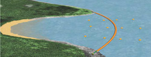

STRANDSONE
- Strandsonen er møtepunktet mellom sjø og land, og pga. de mange forskjellige faktorene som påvirker strandsonen, som tidevann, bølger, is, topografi, saltholdighet og temperatur, finnes det et yrende liv i denne sonen.
- Den biologiske produksjonen strandsonen er høy og strandområdene er derfor svært utsatt når det kommer til oljesøl.
- Erfaringer fra tidligere viser at skadene i strandsonen kan variere i omfang og varighet. Selv 20 år etter Exxon Valdez ulykken finner man fremdeles olje i strandsonen i Prince Williams sundet i Alaska.
